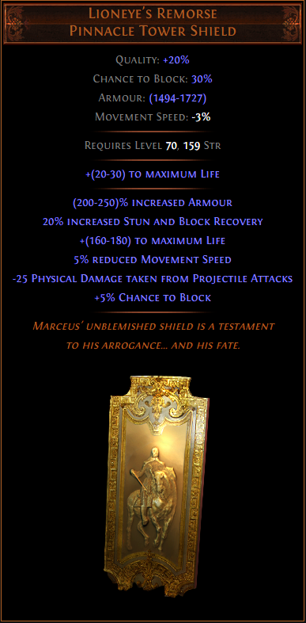

방어에 좀 더 신경쓰고 싶을때
스킬트리
헬멧
갑옷
장갑 또는 신발
아이템 필요
착용x 유니크 아이템
스킬젬 세팅
목걸이
어비스 소켓 허리띠+어비스 쥬얼
방어 강화
미니언 강화
기타
추가
11) 방어에 좀 더 신경쓰고 싶을때 : Lioneye's Remorse

높은 수치의 라이프와 아머를 받을 수 있는 방패입니다.
극옵에 너무 연연해하지 마시고 적절히 좋은 수치를 발품팔아 찾아보시면 싸게 구하실 수 있습니다.
단, 요 녀석은 레지가 전혀 없기 때문에 풀레지를 채우기가 좀 빠듯하실 거라는 걸 감안해주시면 좋겠습니다.